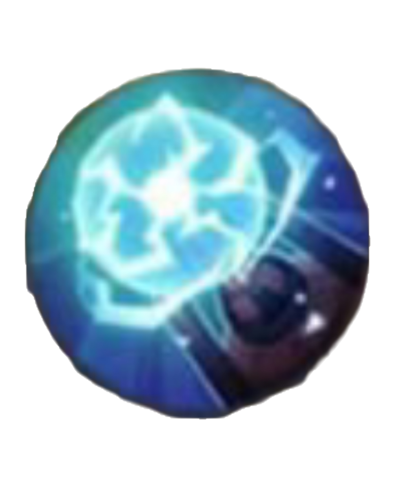
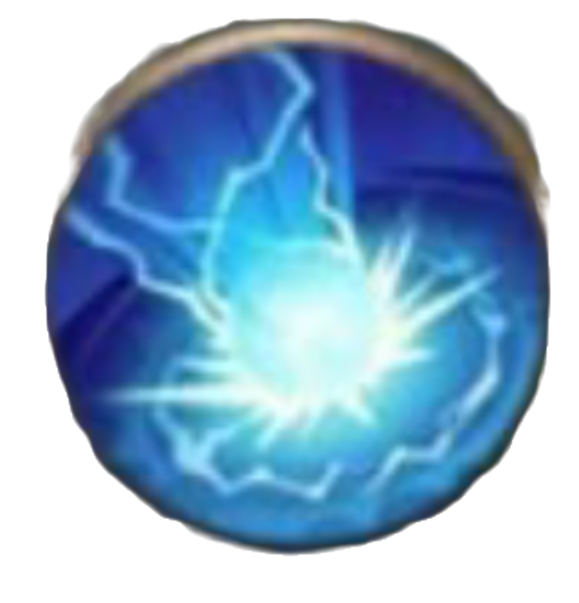
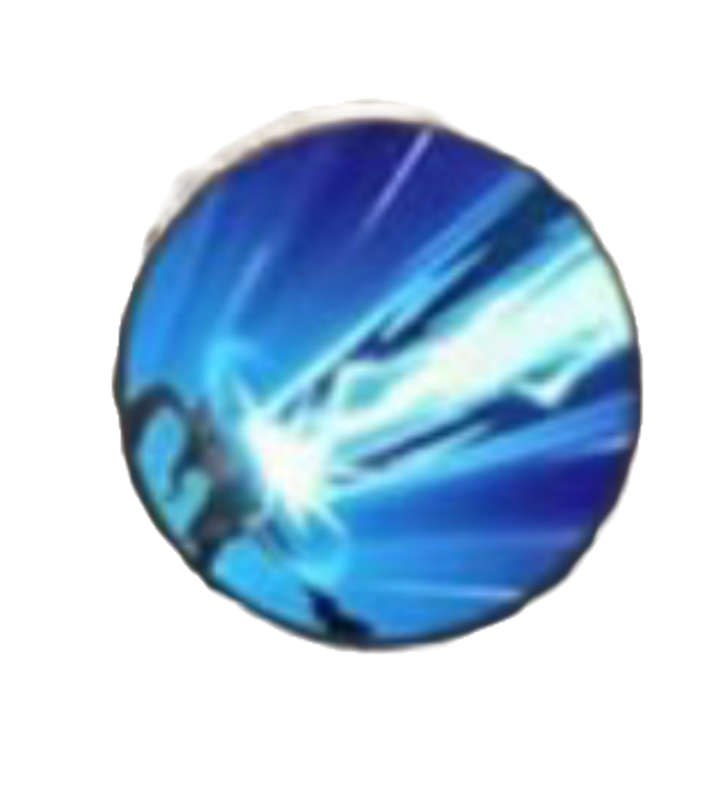

Layla
Marksman / Beginner FriendlyLayla is a beginner-friendly marksman with extremely long attack range. She deals high burst damage from a safe distance, especially in late game.
Layla is a beginner-friendly marksman with extremely long attack range. She deals high burst damage from a safe distance, especially in late game.

Basic attacks deal more damage the further the enemy is.
Fires an energy bomb that deals damage and increases range.

Deals AoE damage and slows enemies.

Fires a powerful laser dealing massive damage from long range.
• Extremely long attack range
• High burst damage
• Easy to use for beginners
• Strong late game scaling
• No mobility (no dash)
• Very squishy
• Easily targeted by assassins
• Needs good positioning
Swift Boots → Berserker’s Fury → Scarlet Phantom → Endless Battle → Malefic Roar → Wind of Nature
• Stay far from enemies to maximize damage
• Always position behind teammates
• Use skill 1 to increase range before fights
• Never overextend alone